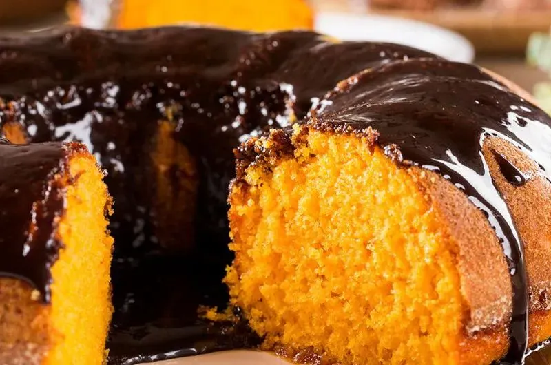

Brazilian Carrot Cake

Description
Brazilian Carrot Cake is a unique and delightful variation of the classic carrot cake.
Known for its bright orange color and topped with a rich chocolate glaze, this cake is a favorite in Brazilian homes.
It's moist, flavorful, and perfect for any occasion.
Ingredients
For the Cake
- 3 medium carrots, peeled and chopped
- 3 large eggs
- 1 cup (240ml) vegetable oil
- 2 cups (400g) granulated sugar
- 2 1/2 cups (310g) all-purpose flour
- 1 tablespoon baking powder
- Pinch of salt
For the Chocolate Glaze
- 1/2 cup (120ml) milk
- 1/4 cup (30g) unsweetened cocoa powder
- 1 cup (200g) granulated sugar
- 2 tablespoons butter
Steps
- Preheat your oven to 350°F (175°C). Grease and flour a bundt cake pan.
- In a blender, blend the carrots, eggs, and oil until smooth.
- In a large mixing bowl, combine the sugar, flour, baking powder, and salt.
- Add the carrot mixture to the dry ingredients and mix until well combined.
- Pour the batter into the prepared bundt cake pan.
- Bake for 40-45 minutes or until a toothpick inserted into the center comes out clean.
- Allow the cake to cool in the pan for about 10 minutes, then transfer it to a wire rack to cool completely.
- In a small saucepan, combine the milk, cocoa powder, sugar, and butter. Cook over medium heat, stirring constantly, until the mixture thickens to a glaze-like consistency.
- Pour the chocolate glaze over the cooled cake. Let the glaze set before slicing and serving.
Enjoy your delicious traditional Brazilian Carrot Cake!!